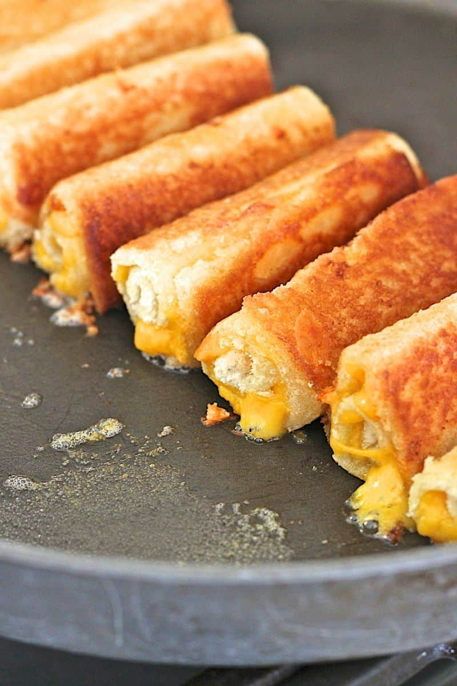

Toast Roll

Ingredients
- Slices of bread
- Shredded cheese
- Ham strips
- Butter
- Salt and pepper to taste
Instructions
- Roll a biece of bread unti it is flat.
- Place the ham and cheese on the bread then roll it up and secure it with toothpicks(s).
- Dip in beaten eggs.
- You can put in the Airfryer at 180 degrees celcius for 10 minutes and flip in the middle, or, deep fry in hot oil and butter until golden brown.
- Serve warm and Enjoy!